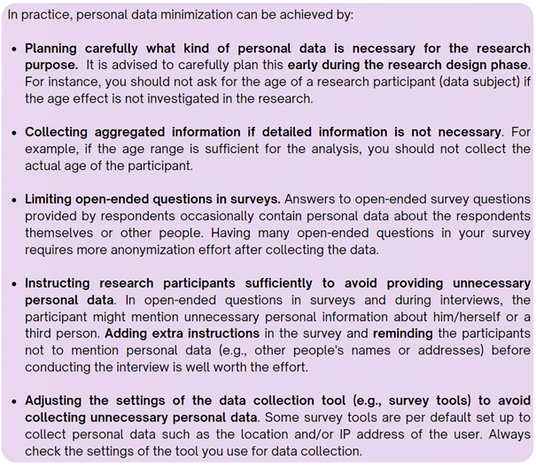

Chapter 3 Data minimization principle
Data minimization is a key principle of data privacy and involves limiting data collection and retention to only what is relevant, necessary and adequate to accomplish a given purpose. In line with this principle, a researcher should only collect and retain the personal data that is required for a research study in mind.
In practice, personal data minimization can be achieved by:
• Planning carefully what kind of personal data is necessary for the research purpose It is adviced to carefully plan this early during the research design phase. For instance, you should not ask for the age of a research participant (data subject) if the age effect is not investigated in the research.
• Collecting aggregated information if detailed information is not necessary. For example, if the age range is sufficient for the analysis, you should not collect the actual age of the participant.
• Limiting open-ended questions in surveys. Answers to open-ended survey questions provided by respondents occasionally contain personal data about the respondents themselves or other people. Having many open-ended questions in your survey requires more anonymization effort after collecting the data.
• Instructing research participants sufficiently to avoid providing unnecessary personal data. In open-ended questions in surveys and during interviews, the participant might mention unnecessary personal information about him/herself or a third person. Adding extra instructions in the survey and reminding the participants not to mention personal data (e.g., other people’s names or addresses) before conducting the interview is well worth the effort.
• Adjusting the settings of the data collection tool (e.g., survey tools) to avoid collecting unnecessary personal data. Some survey tools are per default set up to collect personal data such as the location and/or IP address of the user. Always check the settings of the tool you use for data collection.
Collecting only the minimum amount of personal data necessary for your research reduces the threat of data breaches and privacy violations, thereby reducing potential consequences for the research participants.
When personal data are necessary and have been collected for research, research participants’ identities should be protected. Two techniques are used to ensure that research participants remain anonymous and untraceable during and after research- pseudonymisation and anonymization.